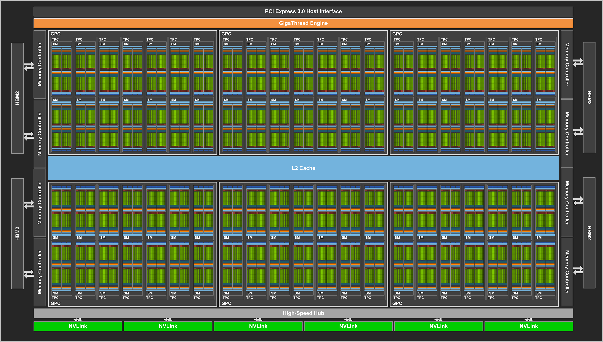

Computing platforms have limited resources, such as memory, cache, bandwidth, and processing power. In the past, algorithms have been derived with optimal complexity and thus are supposed to make an efficient usage of processing power, while memory, cache and bandwidth limitations have often be ignored. However, it is often the case that these resources become the one limiting the overall performance, especially (but not only) when using accelerators such as GPUs. These GPUs offer increased processing capabilities and superior energy efficiency compared to CPUs, making them a crucial element of many computing systems over the past decade.
In this course, we will present on one hand algorithmic approaches that have recently been proposed in order to utilize all resources efficiently, and on the other hand we will focus on how to implement these efficient algorithms on real hardware platforms. The typical use case will focus on linear algebra computations (matrix operations), which are the basis of both "traditional" high performance computing applications and recent neural network computations.
A sequential machine.A distributed memory machine.

Nvidia Volta 100 architecture.
Outline
Introduction
Course details and evaluation methods
Relevance of this course
Computations on CPUs
Matrix multiplications
I/O complexity bounds
Data transfer cost models
Communication avoiding sequential and parallel algorithms
2D/2.5D/3D algorithms
Directed acyclic graph (DAG) scheduling
Memory aware computations
Exploratory research topics
Computations on GPUs
GPU vs CPU architecture
CUDA basics
Memory model, threads, blocks
Memory optimizations using shared memory
Coalescing and memory alignment
Tensor cores
Exploratory research topics
Implementation on CPUs and GPUs
Parallelization using OpenMP and MPI
Parallelization using CUDA
We will look at several interesting research projects in the course
related to parallel computations in high performance computing, machine learning and data analytics.
Prerequisite
Experience with C/C++ is expected. Knowledge of parallel algorithms will be helpful, but not required.
Evaluation
The evaluation will be based on the following weightings:
2 pen-and-paper-based assignments (20% weight)
2-3 small programming assignments (30% weight)
Project (50% weight): Each student will select a topic based on their interests and work on it. The output will be accessed based on a written report and an oral prsentation.